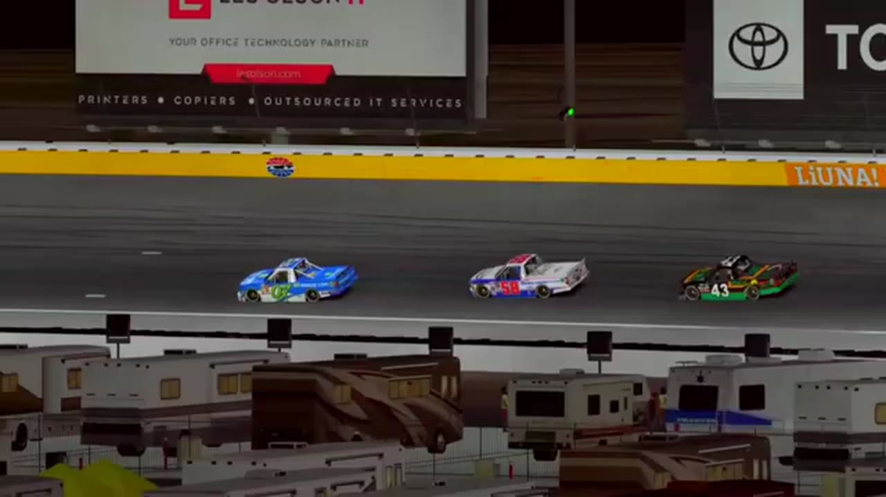

Moreno Owns Las Vegas
Nick Bowman stole Stage 1, but Ethan Moreno answered with the pole, fastest lap, most laps led, Stage 2, and the win.

Ethan Moreno left Las Vegas with nearly every important line HLRN could attach to one performance. He started from the pole, recorded the fastest lap, led the most laps, won Stage 2, and finished the night ahead of Justin Lee Pearson and Sandy Curtis. Only Nick Bowman’s Stage 1 result kept the event from becoming a clean sweep. That interruption mattered because Moreno and Trevor Haley had to recover from early trouble before “The Bear” could turn the fastest car into the winning one.
The opening green placed Moreno’s pace under immediate examination. Pit strategy began moving the field before the first stage was settled, and John Miles’s connection issue swept Easton Collins into trouble. That incident reinforced a problem present throughout HLRN’s first season: a driver could lose a competitive lane through technical instability as quickly as through contact. The resulting caution compressed the field and changed the route to the first points break.
Moreno and Bowman carried the central Las Vegas lead battle into that first stage. Then an incident caught Moreno and Haley and removed the expected front two from the cleanest route to the line. Bowman converted the disruption into the Stage 1 win. The result was not a decorative exception to Moreno’s night; it was the complication that made the rest of the performance meaningful. Moreno would have to rebuild control rather than merely preserve it.
Randy Showers entered the next pit-strategy swing while a scheduled field reset prepared another caution. Las Vegas then used its five-lap recovery-caution procedure, giving damaged or displaced cars a bounded opportunity to return to the competitive picture. The process reshuffled track position again, but Moreno used the next run to regain the lead and take Stage 2. He had answered Bowman’s checkpoint and restored the strongest statistical car to the front.
The field did not leave him alone there. The lead pack went three wide, turning the air and lane choice into a shared problem. Curtis and Showers brought a later restart back to green, placing Curtis in the closing story before her eventual podium was known. Another multi-lane contact sequence produced the next yellow. Each reset reduced the amount of green-flag time Moreno could use to separate himself and increased the value of the restart he still needed to execute.
Moreno’s recovery can be measured by the competitors the race kept putting in his way. Bowman had already taken the first stage after the early incident. Showers controlled a strategy phase. Curtis moved from the restart row into a lasting top-three route, and Pearson remained close enough to become the final challenger. Moreno did not return to a field arranged for him; he returned to a lead picture that had accumulated new owners while he and Haley were rebuilding from trouble.
The final restart turned the statistical favorite back into a racer with one immediate problem. Moreno’s pole and fastest lap could explain how much speed the car possessed, but neither could prevent Pearson from using the shortened run to stay attached. Curtis’s presence behind them meant a mistake could cost more than the win. Moreno had to clear the launch, keep the three-wide traffic from erasing his line, and reach the final lap before another yellow converted pace into another reset.
Pearson became the principal threat when the race finally reached its closing run. The final-lap call placed him with Moreno, close enough that the finish needed to account for both drivers rather than simply announce a leader. Curtis remained in the next supported position. Moreno maintained the point to the stripe, converting his recovery and Stage 2 control into the feature win.
HLRN’s result readout settled the podium as Moreno, Pearson, Curtis. The companion then supplied the larger statistical frame: pole, fastest lap, most laps led, Stage 2, and P1 for Moreno. Because those notes come from the channel’s own produced recap, they can be used together without estimating lap totals or inventing an unofficial dominance index. The precise number of laps led remains open; the fact that he led the most does not.
Pearson’s second place added another major result to the driver who had already stood on Daytona’s inaugural podium. Curtis’s third gave the season another distinct top-three name and showed why her presence on the late restart mattered. Bowman left with the only stage result Moreno did not own. The race therefore produced four supported accomplishments instead of collapsing every useful fact into the winner’s line.
Las Vegas is the first HLRN race that can be explained almost entirely through the winner’s complete performance. Moreno had qualifying speed, race pace, a recovery after early disruption, control at the second checkpoint, and the final position. Yet the story remains stronger because Bowman interrupted the sweep and Pearson and Curtis stayed close enough to define the finish. The Bear did not simply collect the richest stat line of early Season 1; he rebuilt it after the race had already taken part of it away.
Receipts behind the report
These links open the exact HLRN source windows used by the editorial file.
- OPENING · STAGE
The Stage 1 wreck hands Bowman the points
Moreno and Haley are caught in the disruption as Nick Bowman emerges with Stage 1.
▶ 1:18 SOURCE WINDOW - MIDDLE · STAGE
Moreno takes back Stage 2
The Bear reaches the second-stage line after leading the majority of the run.
▶ 3:15 SOURCE WINDOW - MIDDLE · RECORD
The near-perfect line is read aloud
HLRN credits Moreno with pole, most laps led, fastest lap, Stage 2, and the feature win.
▶ 3:45 SOURCE WINDOW - CLOSING · FINISH
Pearson and Curtis cannot reach the Bear
Justin Lee Pearson and Sandy Curtis chase through the white-flag sequence while Moreno holds the lead.
▶ 4:51 SOURCE WINDOW
The companion stat line is HLRN-authored, not an imported official scoring sheet. The podium is supported; no order beyond P3 is published.